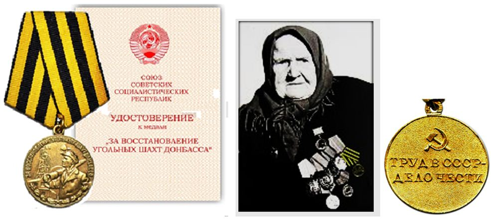
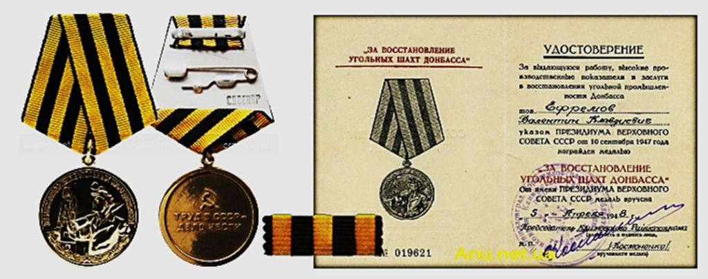
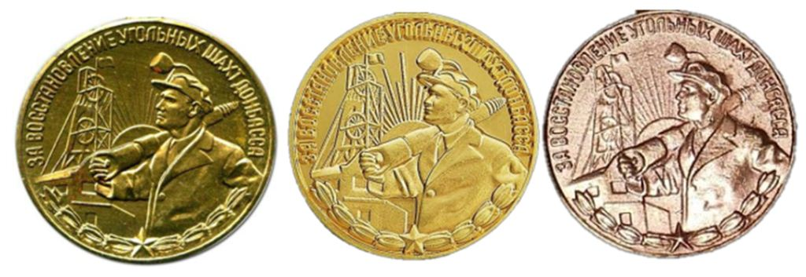
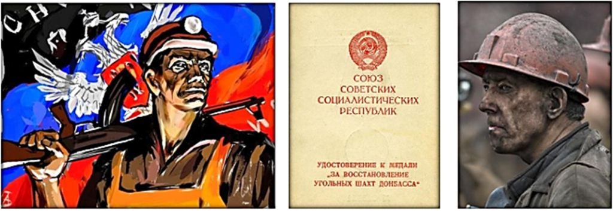
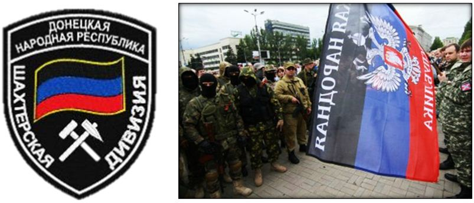

La Médaille « Pour la reconstruction des mines de charbon du Donbass » était une distinction civile d’Union soviétique créée le 10 septembre 1947 par décret du Présidium du Soviet suprême de l’URSS afin de récompense les efforts à la reconstruction des mines de charbon du bassin du Donetsk. Le statut de la médaille a été modifié le 18 juillet 1980 par décret du Présidium du Soviet suprême de l'URSS № 2523-X qui selon la constitution de 1936 (article 49) est la seule instance politique habilitée à créer en URSS des distinctions. Elle est encore reconnue de nos jours par la Fédération de Russie, qui en autorise le port pour les anciens récipiendaires.
HISTORIQUE DE LA MEDAILLE
Il convient de rappeler préalablement à cette étude que l’oblast de Donetsk est « LE » cœur de l’exploitation du charbon ukrainien (641 terrils de mines sur 5.000 hectares). Tout rappelle au Donbass cette histoire, y compris les armoiries de la capitale Donetsk (en russe : Донецк) qui reprennent, dans un style héraldique très soviétique, le symbole de la main du mineur tenant un marteau pour creuser le minerai (cf. ci-dessous) . Quand la guerre (WWII) bat son plein et que le Donbass est libéré de l’envahisseur nazi à l’automne 1943, il convient de remettre rapidement en état l’exploitation des mines de charbons, détruites ou inondées à 95 % par les allemands. Moins de 2 ans après, soit dès 1945, le pays aura remis en exploitation 129 mines majeures et 889 mines de charbon de petite et moyenne taille, qui produiront 21 millions de tonnes dès 1944 pour atteindre presque 40 millions de tonnes en 1945 ! (A titre de comparaison la France en produisait 55 millions de tonnes en 1970).
C’est donc dans ces conditions qu’a été créée cette médaille en 1947 afin de récompenser les efforts fournis par la population, selon une vieille tradition soviétique…
CONDITION D’ATTRIBUTION ET DE PORT
La Médaille est attribuée aux mineurs, employés, personnel administratif ou aux ingénieurs etc… dignes d’être récompensés pour leur travail exceptionnel, leur haute performance de production ou leur contribution à la reconstruction des mines de charbon du Donbass. Les propositions d’attribution de la médaille sont faites par les directeurs des mines, par le parti communiste local et les organisations syndicales. La liste des bénéficiaires est ensuite examinée - au nom du Présidium du Soviet suprême de l'URSS - par le Ministère de l'industrie houillère de l'URSS, ou le Ministère de la construction de l'URSS ou le ministère des produits chimiques et pétroliers des Industries des régions de l'Ouest. La remise de la médaille « Pour la restauration des mines de charbon du Donbass » était faite au nom du Présidium du Soviet suprême et des comités exécutifs régionaux des Soviets dans les communautés de résidence des récipiendaires. La médaille devait être portée avec honneur, afin de servir d’exemple, de prise de conscience, de respect de la discipline et de l'intégrité du travail dans l'exercice de fonctions publiques.

« Babouchka » décorée de plusieurs titres soviétiques et notamment de la médaille des mines du Donbass. La devise en russe sur le revers de la médaille indique « Travailler en URSS – Une question d’Honneur »
PORT DE LA MEDAILLE
La Médaille « Pour la restauration des Donbass mines de charbon » étaient portée sur le côté gauche de la poitrine et lorsque le récipiendaire portait d'autres médailles d'Union soviétique, elle était protocolairement portée immédiatement après la médaille « Pour la restauration des entreprises Noir Métallurgie du Sud ». De nos jours, cette médaille est encore portée prioritairement avant les ordres ou médailles de la Fédération de Russie. Début 1995, environ 46.000 personnes avaient reçues cette médaille.

La Médaille (recto, verso) des mines du Donbass, le ruban et son diplôme
DESCRIPTION DE LA MEDAILLE
La médaille était ronde d’un diamètre de 32 mm de diamètre et en bronze. Sur son avers, dans la moitié gauche, on reconnait l'image en relief d'une mine restaurée, un drapeau au sommet de la tour et sur le côté droit, l'image en relief d'un mineur casqué tourné vers la gauche portant un marteau piqueur sur son épaule droite. En arrière-plan au centre, le Soleil avec des rayons en haut d’un chemin. Le long de la circonférence supérieure, l'inscription inscrite en relief en russe mentionne : « Pour la restauration des mines de charbon du Donbass » et le long de la circonférence inférieure, l'image en relief d'une étoile à cinq branches posée sur une couronne de laurier. Au revers de la médaille et sous la gravure du marteau et de la faucille est gravé une inscription sur deux lignes « TRAVAILLER EN URSS – UNE QUESTION D’HONNEUR » (en russe: «ТРУД В СССР - ДЕЛО ЧЕСТИ»). La médaille « Pour la reconstruction des mines de charbon des Donbass » est fixée par un anneau à plat traversé d’une bélière suspendue à une plaque de forme pentagonale (de forme russe) recouverte d’un ruban moiré de 24 mm de large, barré de 2 bandes noires de 0,5 mm à l’extérieur du ruban et de 3 bandes de 5 mm de rayures jaune dorée séparées par deux bandes noires de 4 mm de large.

Différents modèles et qualités de la médaille de la reconstruction des mines du Donbass de 1947
L’ESPRIT DES MINEURS DU DONBASS N’EST PAS MORT
De nos jours, l’esprit patriotique des mineurs du Donbass n’est pas mort. Alors qu’ils s’étaient peu engagés au début du conflit Ukrainien ; les mineurs de la région de Donetsk rejoignent de plus en plus les bataillons armés (tel que par exemple dans le « Bataillon Kalmius » ou « Шахтёрская дивизия » (Division des Mineurs) commandée par Konstantin Kuzmin). Ce mouvement s’est développé particulièrement depuis les massacres d’Odessa en mai 2014. Il faut dire aussi que sur 36 puits de mine de charbon au Donbass, seuls 18 sont encore en état de fonctionner, détruits par les Ukrainiens. Les motivations des 20.000 mineurs (sur 100.000) qui ont rejoint l’armée de la République populaire de Donetsk sont donc à la fois économique et politique : peur que leur système d’exploitation minière, issue d’une industrie soviétique obsolète, face à des contraintes européennes nouvelles, ne les réduisent au chômage (ainsi que la privatisation des mines menée par Kiev) et peur d’un « fascisme » de certaines milices ukrainiennes de l’Ouest, alors qu’eux même entretiennent une nostalgie, ouvertement communiste dans certains cas, issue de la Grande Guerre Patriotique.

Mineur du Donbass sur fond de drapeau de la RP de Donetsk et livret de la médaille des mines
LES ESCLAVES DU DONBASS…
Enfin, l’un des déclencheurs de cette mobilisation a sans doute été le mépris constant de la part des autorités Ukrainiennes à Kiev qui, relayées par des émissions de télévision nationales, passaient leur temps à dire que : « les esclaves du Donbass ne feraient rien, ne bougeraient pas et obéiraient à la baguette ». Par cette mobilisation, les mineurs du Donbass rappellent qu’il y a presque 70 ans, les autorités russes avaient mis à l’honneur - par l’instauration de la médaille de la restauration des Mines de Donbass - un peuple courageux, attaché à ses racines russes et qui, en pleine guerre, avaient su relancer la production minière du pays ! Une fois de plus, histoire et phaléristique se rejoignent…

Insigne du Bataillon Kalmius des Mineurs du Donbass et lors de leur prestation de serment du 21 juin 2014
O.M.
SOURCES : Wikipedia (Russe), Storyo.ru - medal, Медали СССР, Ordenrf.ru-medali-su, Biografia.ru/arhiv/ordena63, Voenpro.ru/voentorg/medal-za-vosstanovlenie-ugolnyh-shaht-donbassa. lemonderusse.canalblog.com, rusatribut.ru.